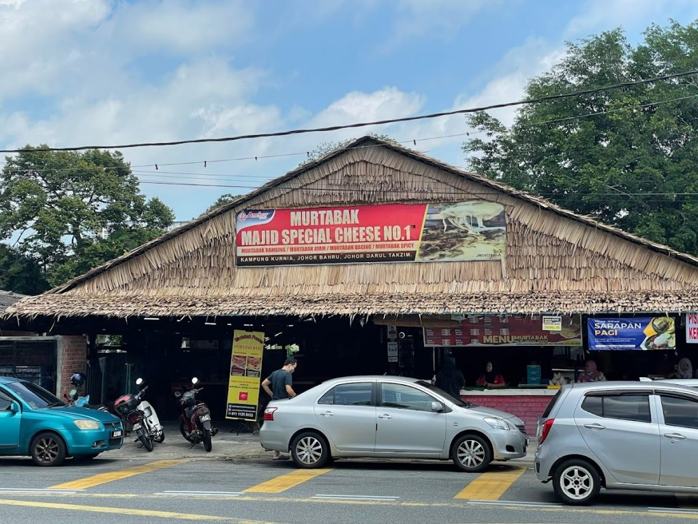

Murtabak, or mutabbaq is a Yemeni stuffed pancake or pan-fried bread commonly found in the Arabian Peninsula,
the Indian subcontinent, and Southeast Asia, notably in Saudi Arabia, Yemen, Indonesia, Malaysia, Singapore, Brunei,
and Southern Thailand
Depending on the location, the name and ingredients can vary significantly. The name mutabbaq means "folded" in Arabic
Murtabak is often described as a spicy folded omelette or pancake with bits of vegetables.[4] Its most common form is made from pan-fried crepes,
usually stuffed with beaten eggs, chopped leeks, chives, or green onion, and minced meat, which is then folded and cut into squares.
In Malaysia, murtabak was originally sold in mamak stalls, and usually includes minced meat (beef or chicken,
sometimes goat meat or mutton) along with garlic, egg, and onion, and is eaten with curry, sliced cucumber, syrup-pickled onions, or tomato sauce.
Like This Food?
Recipe
How to prepare the dough:
Melt the ghee and add to the flour sifted with salt. Rub the shortening into the flour.
Beat the egg and add to the flour-ghee mixture.
Mix soda bicarbonate with water. Gradually add to the flour mixture and knead to a dough.
Grease the dough with a teaspoon of melted ghee and let it rest for 45 minutes in a bowl covered with a damp towel.
How to make the filling:
Heat a pan with peanut oil and add the onion. Sauté for 2 minutes. Add the ground lamb, minced ginger and garlic and sauté for another minute.
Add the spices and salt and cook with ¼ cup of water on medium heat for 25 minutes or until the water has evaporated.
Stir occasionally while cooking the ground lamb
How to assemble the Murtabak using my recipe:
Divide the dough into four balls. Knead and stretch it for 3-4 minutes. Roll each ball into a thin crepe.
Spoon some of the ground lamb filling in the center and top with onions and cilantro.
Spoon a quarter of the beaten egg on top.
Fold the edges of the crepe over the filling and seal it like an envelope by overlapping each end over the other.
Seal the edges by pressing down at the ends.
On low to medium heat, place each murtabak on a griddle and cook for 2-3 minutes on each side or until golden brown on both sides.
Cut the murtabak into squares or halves and garnish with cilantro and chopped shallot. Serve hot with curry or by itself.
Recommended Location:
Murtabak Majid Special Cheese No. 1

Address:
38 Lot, 5581, Jalan Kurniawan, Kampung Kurnia, 80250 Johor Bahru, Johor Darul Ta'zim